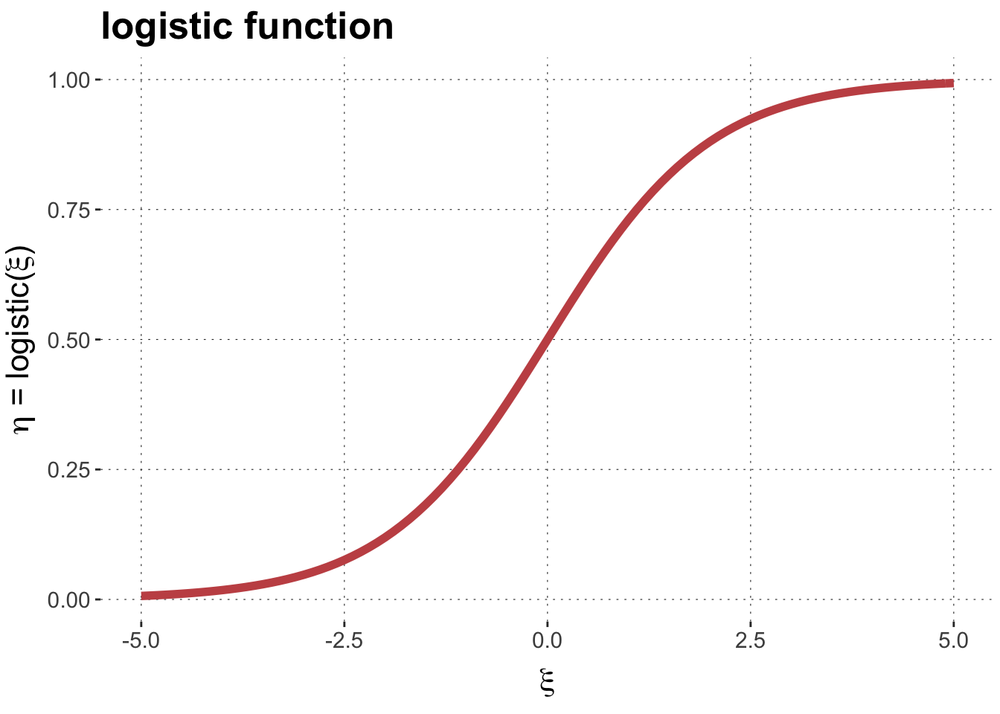
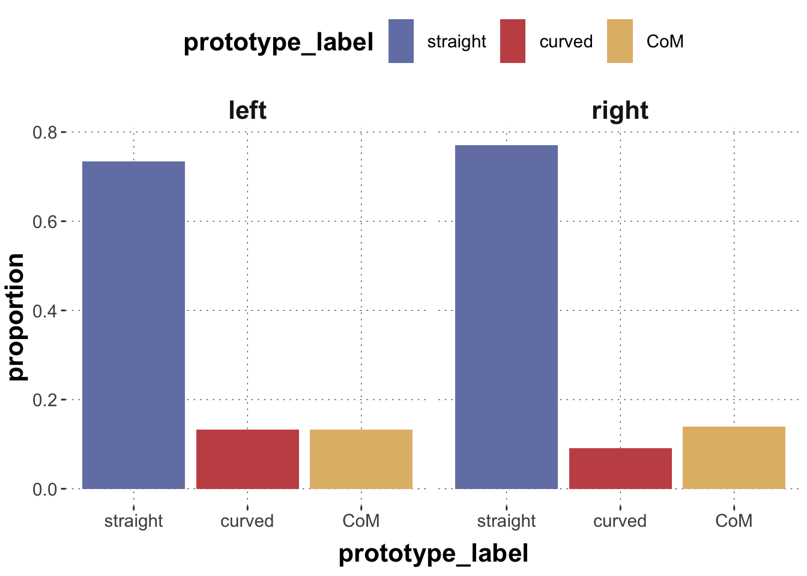
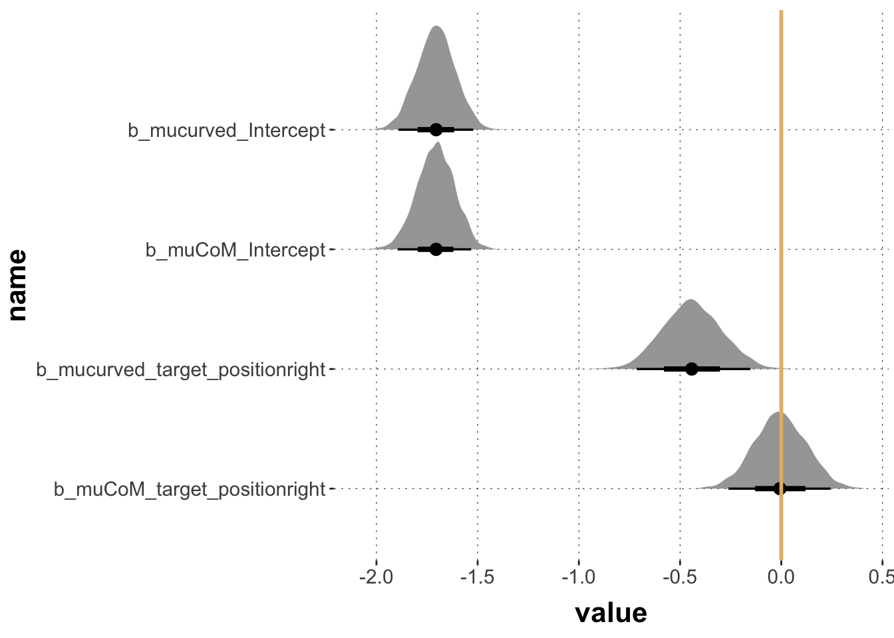

Here is code to load (and if necessary, install) required packages, and to set some global options (for plotting and efficient fitting of Bayesian models).
Code
# install packages from CRAN (unless installed)pckgs_needed <-c("tidyverse","brms","remotes","tidybayes")pckgs_installed <-installed.packages()[,"Package"]pckgs_2_install <- pckgs_needed[!(pckgs_needed %in% pckgs_installed)]if(length(pckgs_2_install)) {install.packages(pckgs_2_install)} # install additional packages from GitHub (unless installed)if (!"aida"%in% pckgs_installed) { remotes::install_github("michael-franke/aida-package")}if (!"faintr"%in% pckgs_installed) { remotes::install_github("michael-franke/faintr")}if (!"cspplot"%in% pckgs_installed) { remotes::install_github("CogSciPrag/cspplot")}# load the required packagesx <-lapply(pckgs_needed, library, character.only =TRUE)library(aida)library(faintr)library(cspplot)# these options help Stan run fasteroptions(mc.cores = parallel::detectCores())# use the CSP-theme for plottingtheme_set(theme_csp())# global color scheme from CSPproject_colors = cspplot::list_colors()[c(1,3,4,5,2,6:14),"hex", drop =TRUE]# setting theme colors globallyscale_colour_discrete <-function(...) {scale_colour_manual(..., values = project_colors)}scale_fill_discrete <-function(...) {scale_fill_manual(..., values = project_colors)}
dolphin <- aida::data_MT
This tutorial covers common types of generalized linear regression models:
logistic regression
multinomial regression
ordinal regression
Poisson regression
Logistic regression
Our hypothesis is that typical examples are easier to classify, so they should have higher accuracy than atypical ones. We are also interested in additional effects of group on accuracy.
sum_stats |>ggplot(aes(x = condition, y = accuracy, group = group, color = group)) +geom_line(size =1, position =position_dodge(0.2)) +geom_point(size =3, position =position_dodge(0.2)) +geom_errorbar(aes(ymin = ci_lower, ymax = ci_upper), width =0.1, size =0.35, position =position_dodge(0.2))

Visually, there might be a hint that typical trials had higher accuracy, but we cannot judge with the naked eye whether this is substantial.
A logistic regression, regressing correct against group * condition, may tell us more. To run the logistic regression, we must tell the brms:brm() that we want to treat 0 and 1 as categories. To be sure, and also to directly dictate which of the two categories is the reference level, we use a factor (of strings) with explicit ordering.
Based on these results, we may conclude that, given the model and the data, we should believe that typical examples had higher accuracy.
Exercise 1a
Test whether there is reason to believe, given model and data, that the touch group was more accurate than the click group. (After all, the click group could change their minds until the very last moment.)
Show solution
compare_groups( fit_logistic,higher = group =="click",lower = group =="touch")# there is no reason to believe (given model and data) that this conjecture is true
Exercise 1b
If you look back at the plot of accuracy, it looks as if the change from atypical to typical condition had a reverse effect for the click and the touch group, i.e., it seems that ther is an interaction between these two variables (group and condition). Use the function brms::hypothesis() to examin the interaction term of the model fit. What do you conclude from this?
Show solution
brms::hypothesis(fit_logistic, "grouptouch:conditionTypical < 0")# given model and data, it is very plausible to believe that there is an interaction between these two variables.
Multinomial regression
Explanation
In multinomial regression the predicted variable is categorical with more than two levels: \(c_1, \dots, c_k\), \(k > 2\). We want to predict probabilities for each category \(p_1, \dots, p_k\) (with some linear predictors, more on this in a moment). To obtain the probabilities, we estimate a set of weights (so-called logits): \(s_1, \dots, s_k\). By default, we set \(s_1 = 0\). (We only need \(k-1\) numbers to define a \(k\)-place probability vector (given that it must sum to one).) For all \(1 \le i \le k\), we define the probability \(p_i\) of category \(i\) via the following (so-called soft-max operation):
This entails that for every \(1 < i \le k\), the score \(s_i\) can be interpreted as the log-odds of category \(c_i\) over the reference category \(c_1\):
\[
s_i = \log \frac{p_i}{p_1}
\]
Finally, we do not just estimate any-old vector of logits, but we assume that each logit \(s_i\) (\(1 < i \le k\)) is estimated as a linear predictor (based on the usual linear regression predictor coefficients, appropriate to the type of the \(l\) explanatory variables):
Two things are important for interpreting the outcome of a multinomial regression fit:
each category (beyond the reference category) receives its own (independent) set of regression coefficients;
the linear predictor predictor \(s_i\) for category \(c_i\) can be interpreted as the log-odds of the \(i\)-th category over the first, reference category.
Example
Our next research question is slightly diffuse: we want to explore whether the distribution of trajectory types is affected by whether the correct target was on the right or the left. We only consider three types of categories (curved, straight and ‘change of mind’) and prepare the data to also give us the information whether the ‘correct’ target was left or right.
# A tibble: 2,052 × 2
prototype_label target_position
<fct> <chr>
1 straight left
2 straight right
3 curved right
4 curved left
5 CoM left
6 CoM right
7 CoM right
8 straight left
9 straight left
10 straight left
# … with 2,042 more rows
The counts and proportions we care about are these:
sum_stats <- dolphin_prepped |>count(target_position, prototype_label) |>group_by(target_position) |>mutate(proportion = n /sum(n))sum_stats
# A tibble: 6 × 4
# Groups: target_position [2]
target_position prototype_label n proportion
<chr> <fct> <int> <dbl>
1 left straight 751 0.734
2 left curved 136 0.133
3 left CoM 136 0.133
4 right straight 793 0.771
5 right curved 93 0.0904
6 right CoM 143 0.139
And here is a plot that might be useful to address your current issue:
sum_stats |>ggplot(aes(x = prototype_label, y = proportion, fill = prototype_label)) +geom_col() +facet_grid(. ~ target_position)

It is hard to say from visual inspection alone, whether there are any noteworthy differences. We might consider the following:
Conjecture: the /difference/ in probability between straight vs curved is higher when the target is on the right than when it is on the left.
This is not a real “research hypothesis” but a conjecture about the data. Let’s still run a multinomial regression model to test address this conjecture.
Family: categorical
Links: mucurved = logit; muCoM = logit
Formula: prototype_label ~ target_position
Data: dolphin_prepped (Number of observations: 2052)
Draws: 4 chains, each with iter = 2000; warmup = 1000; thin = 1;
total post-warmup draws = 4000
Population-Level Effects:
Estimate Est.Error l-95% CI u-95% CI Rhat
mucurved_Intercept -1.71 0.09 -1.90 -1.53 1.00
muCoM_Intercept -1.71 0.09 -1.89 -1.54 1.00
mucurved_target_positionright -0.43 0.15 -0.73 -0.15 1.00
muCoM_target_positionright -0.00 0.13 -0.25 0.25 1.00
Bulk_ESS Tail_ESS
mucurved_Intercept 4655 3332
muCoM_Intercept 3649 3016
mucurved_target_positionright 3844 3151
muCoM_target_positionright 3772 2960
Draws were sampled using sampling(NUTS). For each parameter, Bulk_ESS
and Tail_ESS are effective sample size measures, and Rhat is the potential
scale reduction factor on split chains (at convergence, Rhat = 1).
For better visibility here is a plot of the posteriors over relevant model parameters.
# there MUST be a nicer way of doing this, but ...ordered_names <-c("b_mucurved_Intercept", "b_muCoM_Intercept","b_mucurved_target_positionright","b_muCoM_target_positionright")fit_multinom |> tidybayes::tidy_draws() |>pivot_longer(cols =starts_with("b_")) |>select(name, value) |>mutate(name =factor(name, levels =rev(ordered_names))) |>ggplot(aes(x = value, y = name)) + tidybayes::stat_halfeye() +geom_vline(aes(xintercept =0), color = project_colors[3], alpha=1, size =1)

Exercise 2a
Look at the names of the coefficients in the fit summary to find out:What is the reference level for the categorical predictor variable?
Show solution
# It's the 'left' position, because there is a coefficient for the 'right' position.
Exercise 2b
Look at the names of the coefficients in the fit summary to find out: What is the reference level of the categories to be predicted in the multinomial model?
Show solution
# The reference category is 'straight' because we have regression coeffiecient for all but the 'straight' category.
Exercise 2c
Can you extract information about our conjecture from this plot (or the summary of the model fit)?
Show solution
# Yes! Our conjecture is about the difference in probability of the 'straight' vs he 'curved' category. This difference is directly encoded in regression coefficients. Concretely, the coefficient 'mucurved_Intercept' gives us the log odds of the 'straight' vs' the 'curved' category for the 'left'-position cases. The difference of log odds for the 'right'-position cases is simply the coefficient 'mucurved_target_positionright'. The is credibly smaller than zero (by a margin), so we may conclude that model and data provide support for our conjecture.
Exercise 2d
Use the postrior means of the regression coefficients to compute the corresponding scores \(s_i\) and class probabilities \(c_i\). Compare these to the observed frequencies.
Hypothesis Tests for class b:
Hypothesis Estimate Est.Error CI.Lower CI.Upper Evid.Ratio Post.Prob Star
1 (MAD) > 0 0.02 0 0.02 0.03 Inf 1 *
---
'CI': 90%-CI for one-sided and 95%-CI for two-sided hypotheses.
'*': For one-sided hypotheses, the posterior probability exceeds 95%;
for two-sided hypotheses, the value tested against lies outside the 95%-CI.
Posterior probabilities of point hypotheses assume equal prior probabilities.